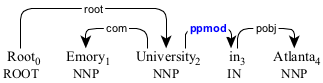
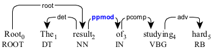
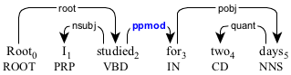
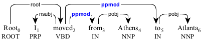

A prepositional phrasal modifier (ssubj) is a preposition phrase modifying another element.

The preposition phrase "in Atlanta" modifying the noun phrase "Emory University".

The preposition phrase "of studying hard" modifying the noun phrase "the result".

The preposition phrase "for two days" modifying the predicate "studied".

The preposition phrases "from Athens" and "to Atlanta" modifying the predicate "moved".